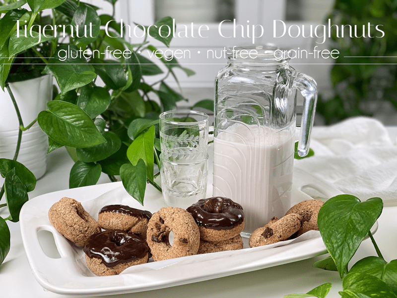
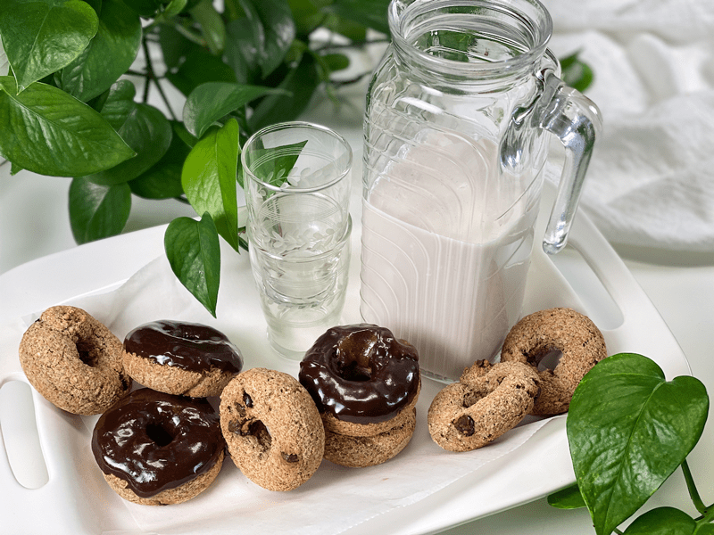
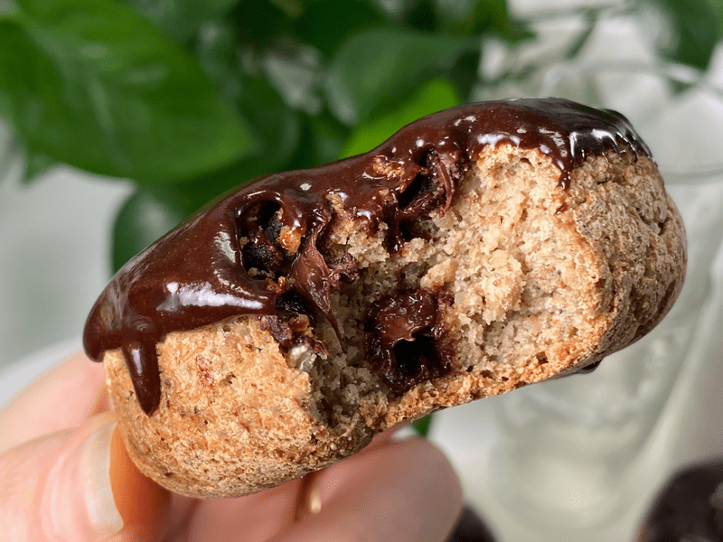
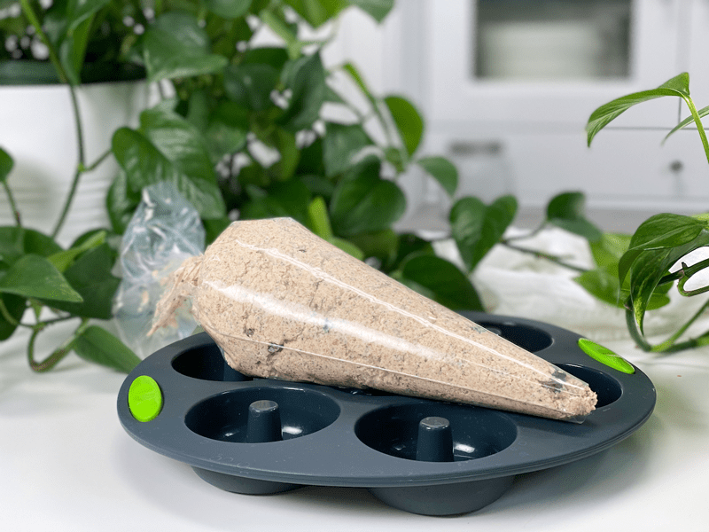
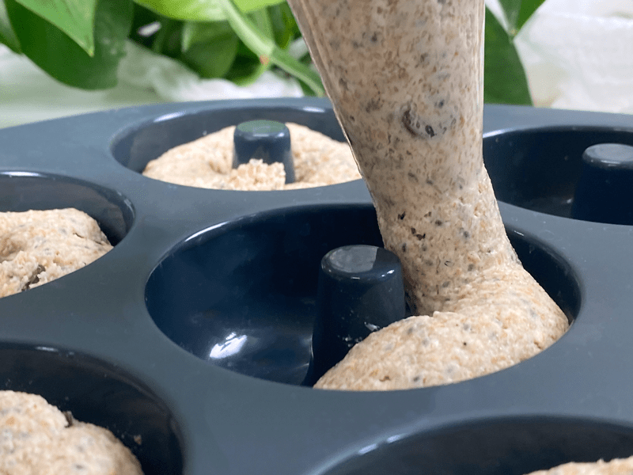
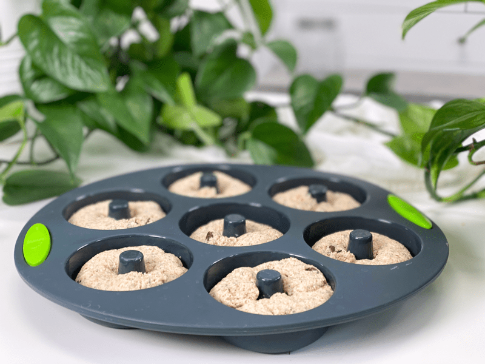
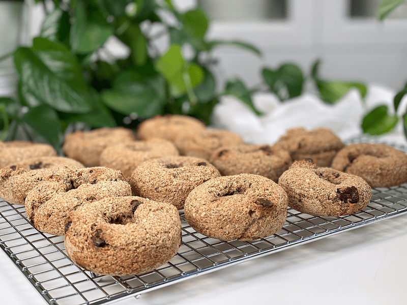
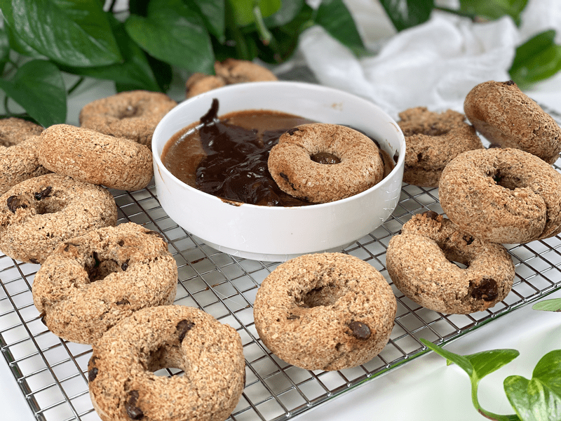
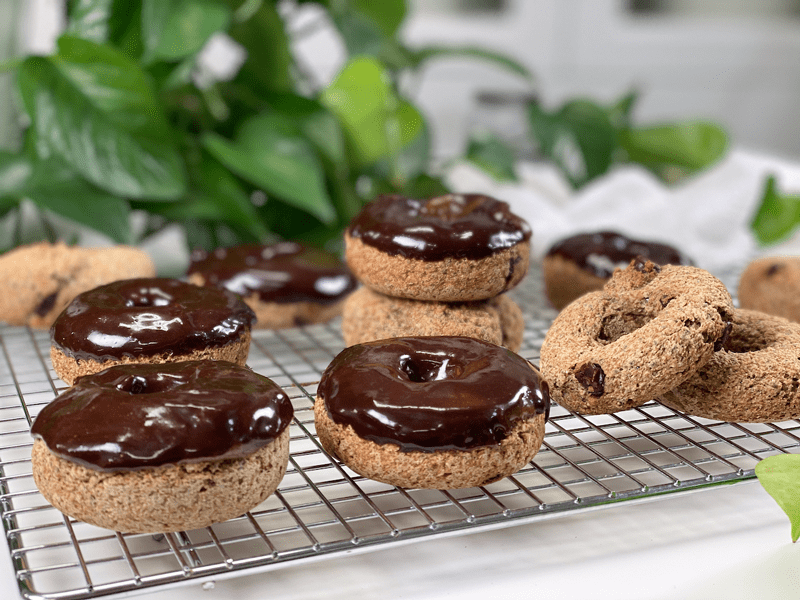
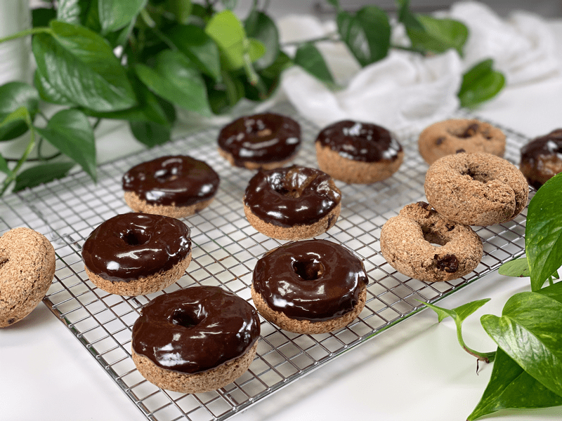

Tigernut Chocolate Chip Doughnuts | Baked | Grain-Free | Nut-Free
Looking for a vegan doughnut recipe without guilt, yeast, gluten, nuts, grains, or oil? Boy, I hope so, because that is what I have prepared for you. Despite what’s NOT in them, I promise you these doughnuts are an absolute delight for everyone! In fact, they actually have an impressive nutritional profile, which is always my top priority. One, just one, of the benefits they offer is the fact that they are an amazing source of prebiotics, because they are full of resistant starch. Prebiotics serve as the FOOD for the good bacteria in our gut… happy taste buds, happy gut… ah yes, this is the life.

The dough is made by combining all the ingredients in the food processor, and within 30 seconds the batter is ready. From there I pipe the batter into the silicone baking mold, pop it in the oven. and within 40 minutes I have professional-looking doughnuts that came together in no time.
Since this is a yeast-free recipe, the texture of these doughnuts will be different compared to yeast doughnuts. Instead of the airy bread-like texture you get with yeast doughnuts, these are of a more of a soft cake/bread-like texture. Add the raw chocolate ganache, and they are so irresistibly delicious.

Tigernut flour is unique to work with. It is a bit coarser in texture than other flours, it has a slightly nutty taste (despite not being a nut), and has a surprising slight sweetness to it. So, if you detect a slightly different mouthfeel than what you might normally expect… it’s the tigernut flour. To learn more about it, check out the informative post that I created (here).
Another healthy ingredient that I added was maca powder. Interestingly enough, maca is actually a cruciferous vegetable and therefore related to broccoli, cauliflower, cabbage, and kale. “Get the veg out!” The main edible part of the maca plant is the root, which grows underground. It exists in several colors, ranging from white to black. Maca root is generally dried and consumed in powder form and has an earthy, nutty flavor. Maca has a wide range of health benefits such as increased libido, and it helps with mood and anxiety. The list goes on and Google is your friend if you find yourself with a growing interest in it.

Tidbits and Techniques
- Don’t skip the soaking process for the buckwheat. It increases nutrients and softens and swells the buckwheat kernels, which plays a role in the texture of these doughnuts.
- If tigernut flour isn’t your cup of tea, you can use ground rolled oats instead.
- If you don’t care for maca or don’t have any on hand, it can be omitted without any substitution needed.
- As you can see when reading through the ingredient list, the doughnuts themselves are not really sweet. I do use applesauce and a splash of liquid stevia, but that’s it. I knew the ganache was going to bring in enough sweetness, so I purposely kept these on the shy side with sweeteners.
- Be careful that you don’t OVER BAKE the doughnuts or they will become dry.
After adding the frosting to the doughnuts, I placed them in an airtight container on the counter for Bob to enjoy. It wasn’t long before I passed through the kitchen to find a couple of doughnuts on a cutting board, along with a knife. Every time Bob would walk by, he would cut off a slice and pop it in his mouth, smile, and as Tony the Tiger would say… “Theeey’re Greeeeeat!” Blessings and love, amie sue
 Ingredients
Ingredients
Yields 14 doughnuts
- 1 cup raw whole buckwheat kernels, soaked
- 1 1/2 cups tigernut flour
- 1/4 cup chia seeds
- 1/4 cup psyllium husks (not powder)
- 1 Tbsp maca powder
- 1/4 cup unsweetened applesauce
- 1/2 tsp liquid NuNatural stevia
- 1 1/2 cups water
- 1 tsp sea salt
- 1 tsp aluminum-free baking powder
- 1/2 tsp baking soda
- 1/2 cup chocolate chips
Frosting
Preparation
Soaking the Buckwheat
- Place the buckwheat in a glass or stainless steel bowl, and cover with double the amount of water.
- Add 2 Tbsp raw apple cider vinegar, stir, and cover with a clean dishtowel.
- Let it sit on the counter for 30 minutes to 4 hours.
- Once ready to use, drain and rinse before adding to the food processor.
Mixing and Baking
- Preheat oven to 350 degrees (F) and prepare your baking pan.
- I am baking in a silicone doughnut pan; therefore I don’t need any oil. One tip when using silicone baking dishes is to place them on a baking pan before loading and transporting them to the oven. Since they are soft and flexible, they can be challenging to handle once full.
- If you use any other type of pan, I recommend oiling the doughnut cavities so the batter doesn’t stick.
- Add the soaked buckwheat, tigernut flour, chia seeds, whole psyllium husks (not powder), maca, applesauce, water, stevia, baking powder, baking soda, and salt to the food processor. Process for a full 30-60 seconds.
- Hand mix in the chocolate chips. Immediately pour into the doughnut ring cavities and bake for 35-40 minutes.
- Piping bag tip: I find that putting the batter into a piping bag and snipping off the end makes it much easier to create perfectly shaped doughnuts–less messy than trying to spoon the batter in.
- The baking time may differ depending on your oven (no two ovens are the same) and depending on the size of the muffins you make. Keep an eye on them when making them for the first time, making sure to document the cooking time once they are done.
- To test for doneness, poke a toothpick in the center of the doughnut. When the doughnut is done cooking, the toothpick will come out clean.
- Once done baking, place the doughnuts onto a cooling rack. Do not keep them in the pan, or they can become soggy.
- Once cooled, frost them with the chocolate ganache and store them in an airtight container on the counter for a couple of days. These doughnuts are best enjoyed sooner than later.
-

-
To make life easier, scoop the batter into a piping bag so you can pipe it into the doughnut mold.
-

-
With even pressure, fill the cavity with dough.
-

-
Slide them into the oven.
-

-
Once done baking, remove the doughnuts from the pan and place them directly onto the cooling rack.
-

-
Once cooled, frost.
-

-
If you use the chocolate ganache recipe, it doesn’t set up creating a shell, so you won’t be able to stack them for storage.
-

-
Place them in an airtight container, single layer, and enjoy over the next few days.
© AmieSue.com